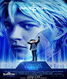
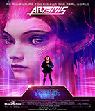
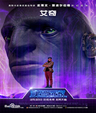
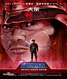
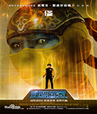
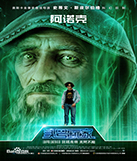

帕西瓦尔
韦德·沃兹在游戏中的化身，虽然韦德在现实生活中只是一个生活在贫民区的普通人，害羞、不合群、毫无存在感，但是在“绿洲”中，他是人们心目中的超级英雄，自信、勇敢、机智，颇受大家喜爱。

阿尔忒密斯
萨曼莎·库克在游戏中的化身，韦德的爱慕对象，“绿洲”彩蛋猎人中的传说，游戏水平高超，坚韧、无畏，也是少有的现实与虚拟中人物性格和特点都极为相似的人。

艾奇
现实中是豪爽的黑人，“绿洲”最好的机械师，身材巨大，幽默风趣，是帕西瓦尔最好的朋友。

大东
现实中是一个信仰禅宗的年轻人，“绿洲五强”之一，强大的日本武士，熟知剑法和功夫。

修
现实中是11岁的少年，讨厌因为年龄被别人评判轻视，想要表现得像成年人一样，“绿洲五强”之一，拥有与年龄不相称的勇敢与成熟。

阿诺克
“绿洲”创始人哈利迪在游戏中的化身，哈利迪作为一个科学怪人，性格难以捉摸，在寻找彩蛋的过程中，他的化身充当了游戏的指挥者，是贯穿故事始终的催化剂。